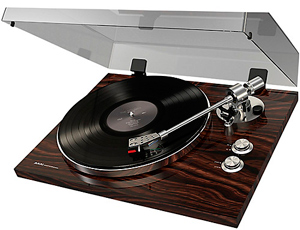

History of Vinyl Music Records
Early disc music records were made of various materials including hard rubber. From 1897 onwards, earlier materials were largely replaced by a rather brittle formula of 25% shellac (a material obtained from the excretion of a southeast Asian beetle), a filler of a cotton compound similar to manila paper, powdered slate, and a small amount of a wax lubricant. The mass production of shellac records began in 1898 in Hanover, Germany. Shellac music records were the most common until the 1950s. Unbreakable music records, usually of celluloid (an early form of plastic) on a pasteboard base, were made from 1904 onwards, but they suffered from an exceptionally high level of surface noise.
In the 1890s the early recording formats of discs were usually seven inches (nominally 17.5 cm) in diameter. By 1910 the 10-inch (25.4cm) music record was by far the most popular standard, holding about three minutes of music or entertainment on a side. From 1903 onwards, 12-inch records (30.5cm) were also commercially sold, mostly of classical music or operatic selections, with four to five minutes of music per side.
Such music records were usually sold separately, in plain paper or cardboard sleeves that may have been printed to show the producer or the retailer's name and, starting in the 1930s, in collections held in paper sleeves in a cardboard or leather book, similar to a photograph album, and called record albums. Empty music record albums were also sold that customers could use to store their records in.
While a 78 rpm record is brittle and relatively easily broken, both the microgroove LP 33? rpm record and the 45 rpm single records are made from vinyl plastic that is flexible and unbreakable in normal use. However, the vinyl records are easier to scratch or gouge. 78s come in a variety of sizes, the most common being 10 inches (25 cm), and 12 inches (30 cm) in diameter, (sometimes 6–8 inches in the UK), and these were originally sold in either paper or card covers, generally with a circular cutout allowing the record label to be seen. 45 rpm singles and EPs (Extended Play) are of a 7-inch (17.5 cm) diameter, the earlier copies being sold in paper covers.
After World War II, two new competing formats came on to the market and gradually replaced the standard "78": the 33? rpm (often just referred to as the 33 rpm), and the 45 rpm. The 33? rpm LP (for "long play") format was developed by Columbia Records and marketed in 1948. RCA Victor developed the 45 rpm format and marketed it in 1949, in response to Columbia. Both types of new disc used narrower grooves, intended to be played with a smaller stylus—typically 0.001" (25 µm) wide, compared to 0.003" (76 µm) for a 78—so the new records were sometimes called Microgroove. In the mid-1950s all record companies agreed to a common recording standard called RIAA equalization. Prior to the establishment of the standard each company used its own preferred standard, requiring discriminating listeners to use preamplifier with multiple selectable equalization curves.
Beginning in 1939, Columbia Records continued development of this technology. Dr. Peter Goldmark and his staff undertook exhaustive efforts to address problems of recording and playing back narrow grooves and developing an inexpensive, reliable consumer playback system. In 1948, the 12" (30 cm) Long Play (LP) 33? rpm microgroove record album was introduced by the Columbia Record at a dramatic New York press conference. In 1949, RCA Victor released the first 45 RPM single, 7" in diameter, with a large center hole to accommodate an automatic play mechanism on the changer, so a stack of singles would drop down one record at a time automatically after each play. Early 45 RPM music records were made from either vinyl or polystyrene.